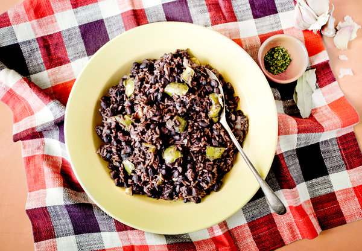

Arroz Congrí

Description
Arroz congrí, or Cuban black beans and rice, is a simple but delicious Cuban staple made with rice, black beans, peppers, onions, and garlic.
Ingredients
- 1 cup dried black beans
- 2 tablespoons olive oil
- 1 small onion, chopped into 1/2-inch pieces
- 1 small green pepper, chopped into 1/2-inch pieces
- 5 or 6 cloves garlic, roughly chopped
- 1 teaspoon kosher salt
- Freshly ground pepper to taste
- 1 tablespoon fresh oregano, roughly chopped
- 1/4 teaspoon dried dill
- 2 small bay leaves
- 1 tablespoon cider vinegar
- 1 tablespoon dry red wine, or vino seco
- 1 1/2 cups long-grain rice, rinsed
Steps